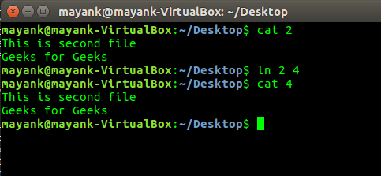

Linux provides some important tricks. Here’s a few and important one’s:
- leave — remind you when you have to leave
Syntax:leave +hhmm
leave waits until the specified time (within the next 12 hours), then reminds you that you have to leave by writing to the TTY that you executed leave on. You are reminded 5 minutes and 1 minute before the actual time, at the time, and every minute thereafter.
Options: hhmm The time of day is in the form hhmm where hh is a time in hours (on a 12 or 24 hour clock), and mm are minutes. - diff – compare files line by line
Syntax:diff file1 file2
Compare FILES line by line.
diff -q file1 file2
report only when files differ
- cal, ncal — displays a calendar and the date of Easter
Syntax:cal
The cal utility displays a simple calendar in traditional format and ncal offers an alternative layout, more options and the date of Easter. The new format is a little cramped but it makes a year fit on a 25×80 terminal. If arguments are not specified, the current month is displayed.
- locate – find files by name
Syntax:locate file_name
locate reads one or more databases prepared by updatedb(8) and writes file names matching at least one of the PATTERNs to standard output, one per line.
- passwd – change user password
Syntax:passwd
The passwd command changes passwords for user accounts. A normal user may only change the password for his/her own account, while the superuser may change the password for any account. passwd also changes the account or associated password validity period.
- ln – make links between files
Syntax:ln existing_file_name file2_name
create a link to TARGET with the name specified

{kind=link}
{kind=link}
{kind=link}
{kind=link}
{kind=link}
{kind=link}
{kind=link}
{kind=link}